Kinetic Flux Vector Splitting (KFVS) scheme
Kinetic flux vector splitting (KFVS) scheme is one group of approximate Riemann solvers for compressible Euler equations, it is also extended to solve the shallow water equations (SWE).
KFVS scheme is based on collisionless Boltzmann equation, it assumes an equilibrium distribution inside cell at the beginning of each time step.
KFVS scheme satisfies the positivity and entropy condition, however, the dissipation is too much.
1D Euler equations
Sod test problem
Its solution consists of a left rarefaction, a contact and a right shock.
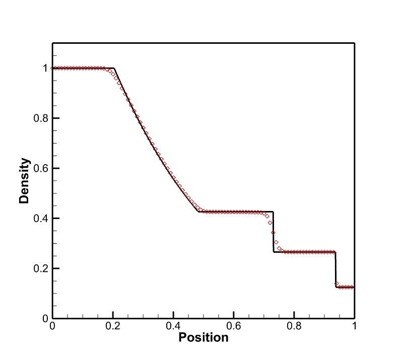 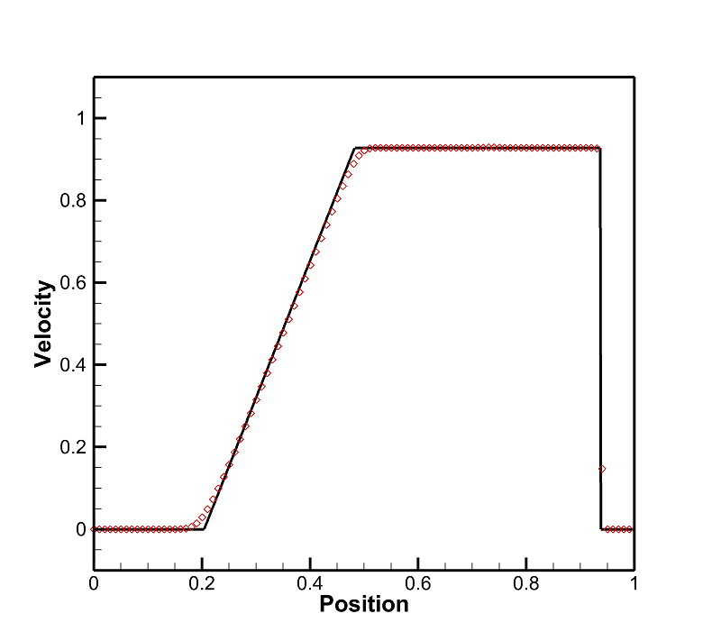 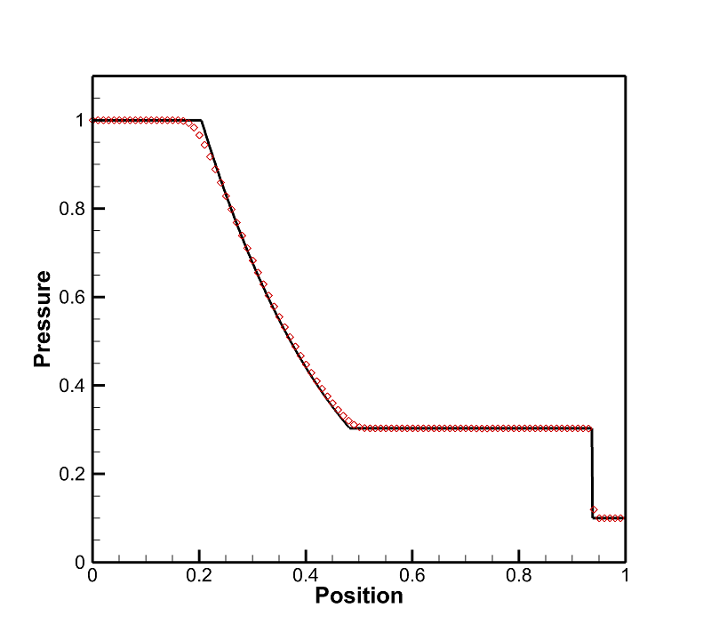 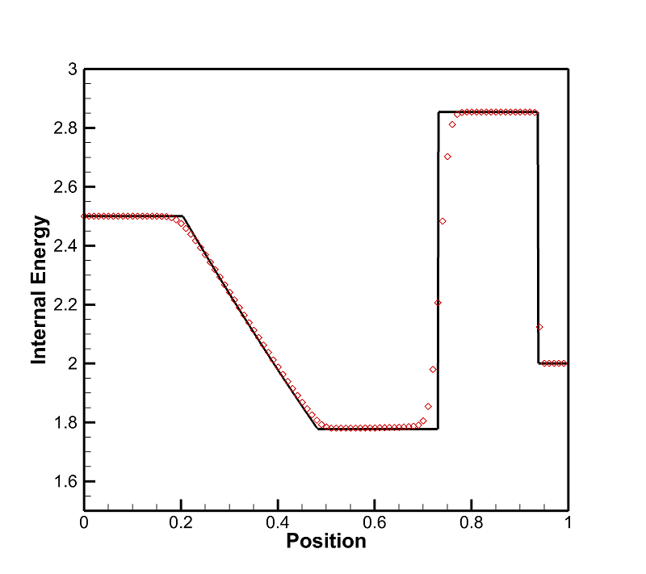123 problem
Its solution consists of two strong rarefactions and a trivial stationary contact discontinuity.
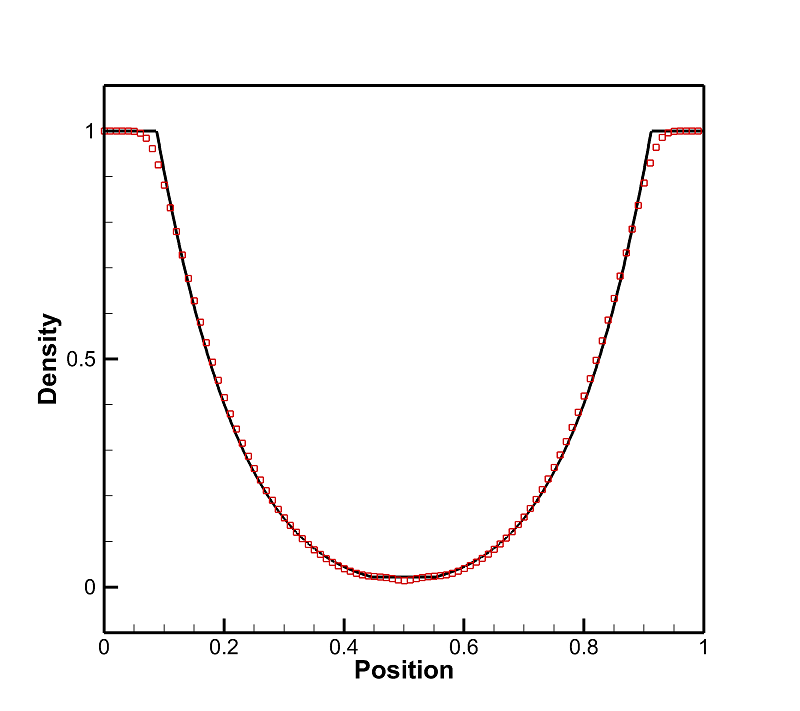 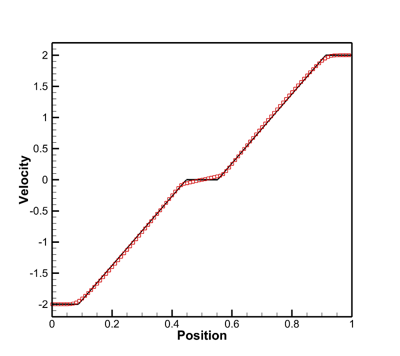 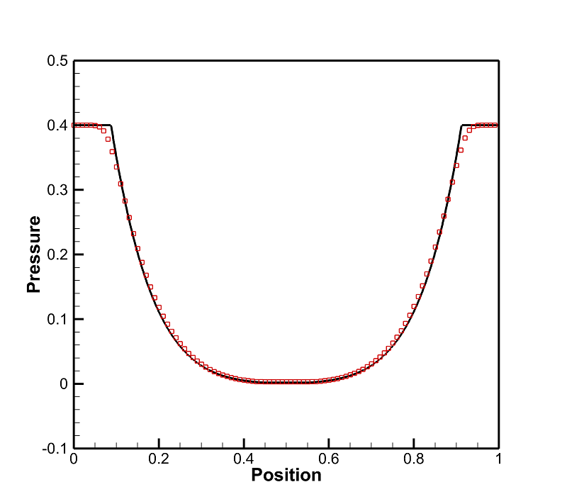 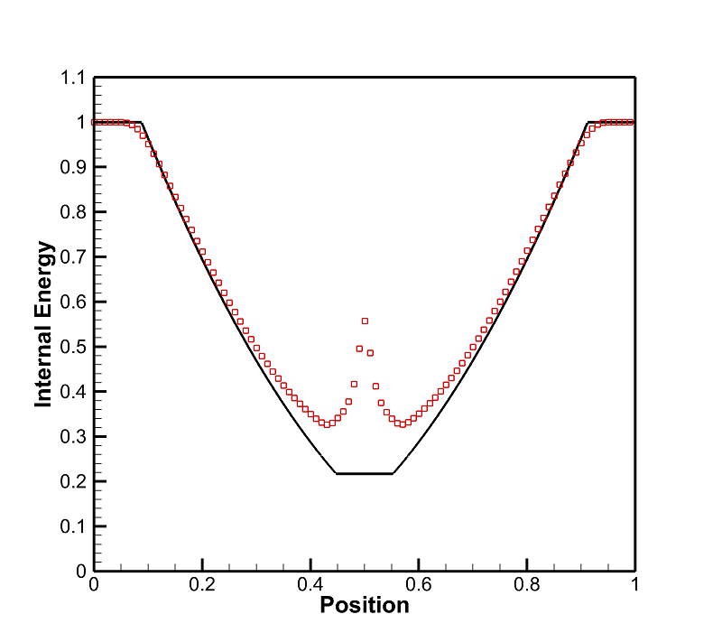2D shallow water equations
Circular dam break
In the center of the square is a cylindrical dam. Suddenly, the dam fails and the circular wall is assumed to be removed completely, then the waves radially spread.
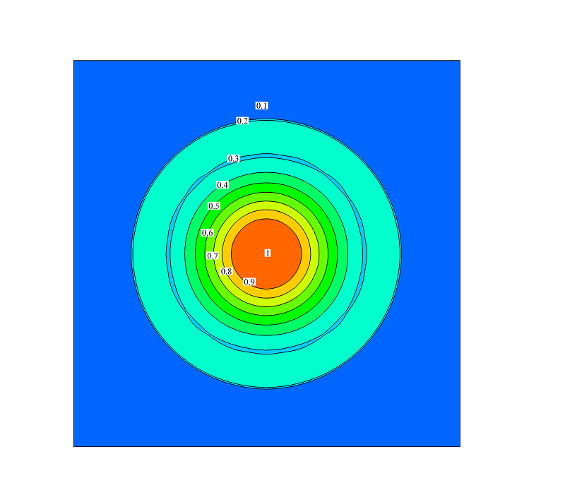 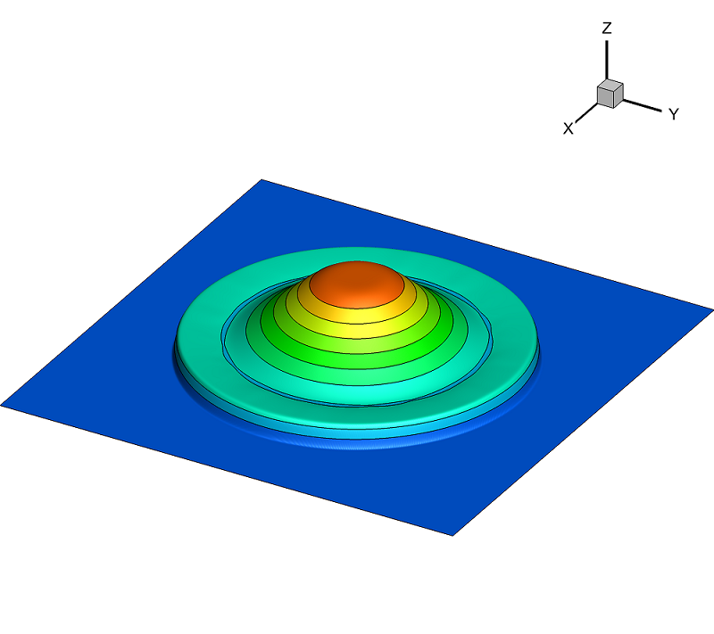Partial dam break
The initial water level of the upstream of the dam twice the tail water. At the instant of dam failure, water is released into the downstream side through a breach.
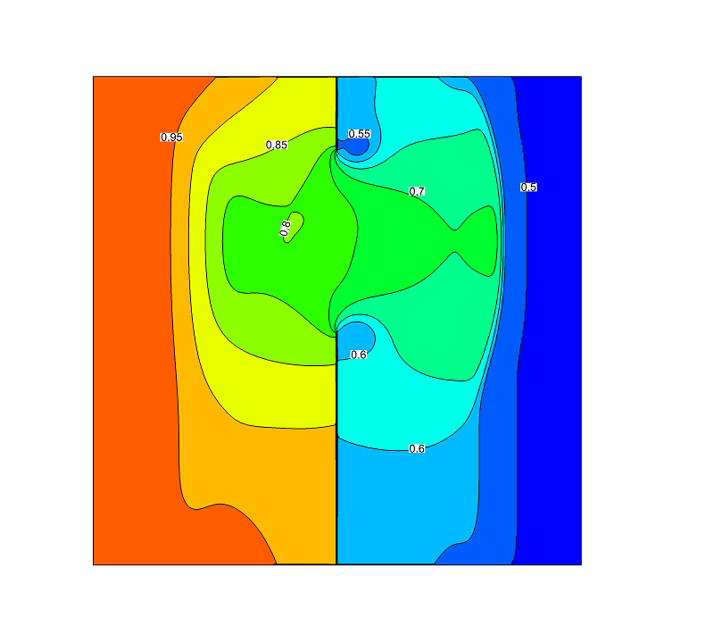 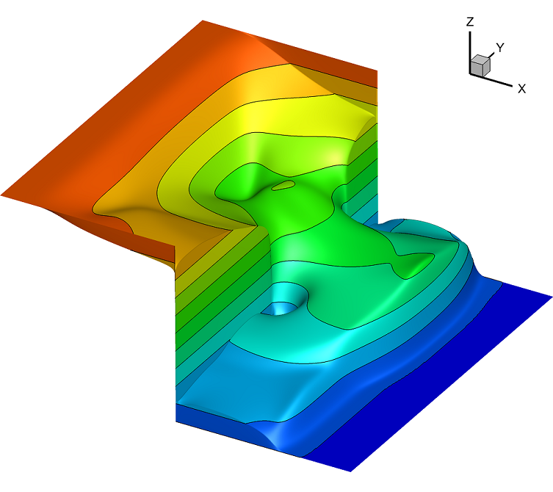